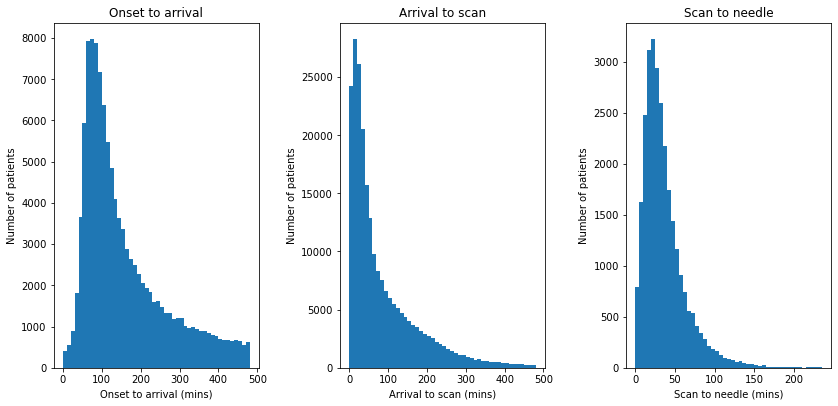

Stroke pathway timing distribution¶
Aims¶
Visualise distributions of timings for:
Onset to arrival (when known)
Arrival to scan
Scan to needle
Find best distribution fit for the above.
Import libraries¶
import matplotlib.pyplot as plt
import numpy as np
import pandas as pd
import scipy.stats
from sklearn.preprocessing import StandardScaler
# Hide warnings to keep notebook tidy
import warnings
warnings.filterwarnings("ignore")
Import data¶
# import data
raw_data = pd.read_csv(
'./../data/2019-11-04-HQIP303-Exeter_MA.csv', low_memory=False)
Plot distributions¶
# Set up figure
fig = plt.figure(figsize=(12,6))
# Subplot 1: Histogram of onset to arrival
onset_to_arrival = raw_data['S1OnsetToArrival_min']
# Limit to arrivals within 8 hours
mask = onset_to_arrival <= 480
onset_to_arrival = onset_to_arrival[mask]
ax1 = fig.add_subplot(131)
bins = np.arange(0, 481, 10)
ax1.hist(onset_to_arrival, bins=bins, rwidth=1.0)
ax1.set_xlabel('Onset to arrival')
ax1.set_ylabel('Count')
ax1.set_title('Onset to arrival')
ax1.axes.get_yaxis().set_visible(False)
# Subplot 2: Histogram of arrival to scan
arrival_to_scan = raw_data['S2BrainImagingTime_min']
# Limit to arrivals within 4 hours
mask = arrival_to_scan <= 480
arrival_to_scan = arrival_to_scan[mask]
ax2 = fig.add_subplot(132)
bins = np.arange(0, 481, 10)
ax2.hist(arrival_to_scan, bins=bins, rwidth=1)
ax2.set_xlabel('Arrival to scan (mins)')
ax2.set_ylabel('Count')
ax2.set_title('Arrival to scan')
ax2.axes.get_yaxis().set_visible(False)
# Subplot 2: Histogram of scan to needle
scan_to_needle = \
raw_data['S2ThrombolysisTime_min'] - raw_data['S2BrainImagingTime_min']
ax3 = fig.add_subplot(133)
bins = np.arange(0, 240, 5)
ax3.hist(scan_to_needle, bins=bins, rwidth=1)
ax3.set_xlabel('Scan to needle (mins)')
ax3.set_ylabel('Count')
ax3.set_title('Scan to needle')
ax3.axes.get_yaxis().set_visible(False)
# Save and show
plt.tight_layout(pad=2)
plt.savefig('output/pathway_distribution.jpg', dpi=300)
plt.show();

Fit distributions¶
Distributions are fitted to bootstrapped 10k samples of the data.
Define function to fit distributions¶
def fit_distributions(
data_to_fit, name, number_of_dist_to_plot=1, samples=10000):
# Reshape data and remove invalid values
yy = data_to_fit.values
mask = (yy > 0) & (yy < np.inf)
yy = yy[mask]
# Bootstrap sample
yy = np.random.choice(yy, samples, replace=True)
# Reshape
yy = yy.reshape (-1,1)
size = len(yy)
# Standardise data
sc = StandardScaler()
sc.fit(yy)
y_std = sc.transform(yy)
# Add +/- 0.0001 Std Dev jitter to avoid failure of fit for discrete data
jitter = np.random.uniform(-0.0001, 0.0001, samples)
jitter = jitter.reshape (-1,1)
y_std += jitter
# Test 10 distributions
dist_names = ['beta',
'expon',
'gamma',
'lognorm',
'norm',
'pearson3',
'triang',
'uniform',
'weibull_min',
'weibull_max']
# Set up empty lists to stroe results
chi_square = []
p_values = []
# Set up 50 bins for chi-square test
# Observed data will be approximately evenly distrubuted aross all bins
percentile_bins = np.linspace(0,100,51)
percentile_cutoffs = np.percentile(y_std, percentile_bins)
observed_frequency, bins = (np.histogram(y_std, bins=percentile_cutoffs))
cum_observed_frequency = np.cumsum(observed_frequency)
# Loop through candidate distributions
for distribution in dist_names:
# Set up distribution and get fitted distribution parameters
dist = getattr(scipy.stats, distribution)
param = dist.fit(y_std)
# Obtain the KS test P statistic, round it to 5 decimal places
p = scipy.stats.kstest(y_std, distribution, args=param)[1]
p = np.around(p, 5)
p_values.append(p)
# Get expected counts in percentile bins
# This is based on a 'cumulative distrubution function' (cdf)
cdf_fitted = dist.cdf(percentile_cutoffs, *param[:-2], loc=param[-2],
scale=param[-1])
expected_frequency = []
for bin in range(len(percentile_bins)-1):
expected_cdf_area = cdf_fitted[bin+1] - cdf_fitted[bin]
expected_frequency.append(expected_cdf_area)
# calculate chi-squared
expected_frequency = np.array(expected_frequency) * size
cum_expected_frequency = np.cumsum(expected_frequency)
ss = sum (((cum_expected_frequency - cum_observed_frequency) ** 2) /
cum_observed_frequency)
chi_square.append(ss)
# Collate results and sort by goodness of fit (best at top)
results = pd.DataFrame()
results['Distribution'] = dist_names
results['chi_square'] = chi_square
results['p_value'] = p_values
results.sort_values(['chi_square'], inplace=True)
# Report results
print ('\nDistributions sorted by goodness of fit:')
print ('----------------------------------------')
print (results)
print ()
# Plot
# ----
# Create figure
fig = plt.figure(figsize=(10,5))
ax1 = fig.add_subplot(121)
ax2 = fig.add_subplot(122)
data = y_std.copy()
data = list(data.flatten())
data.sort()
# Get the top three distributions from the previous phase
dist_names = results['Distribution'].iloc[0:number_of_dist_to_plot]
# Histograms
# Divide the observed data into 100 bins for plotting (this can be changed)
number_of_bins = 100
bin_cutoffs = np.linspace(
np.percentile(data,0), np.percentile(data,99),number_of_bins)
h = ax1.hist(data, bins = bin_cutoffs, color='0.75')
x = h[1] # X values for hisotgram
for distribution in dist_names:
# Create an empty list to stroe fitted distribution parameters
parameters = []
# Set up distribution and store distribution paraemters
dist = getattr(scipy.stats, distribution)
param = dist.fit(data)
parameters.append(param)
# Get line for each distribution (and scale to match observed data)
pdf_fitted = dist.pdf(x, *param[:-2], loc=param[-2], scale=param[-1])
scale_pdf = np.trapz (h[0], h[1][:-1]) / np.trapz (pdf_fitted, x)
pdf_fitted *= scale_pdf
# Add a small amounbt of jitter to avoid overlying lines
jitter = np.random.uniform(0.99, 1.01, len(pdf_fitted))
pdf_fitted *= jitter
# Add the line to the plot
ax1.plot(x, pdf_fitted, label=distribution, alpha=1)
ax1.set_xlabel('Standardised value')
ax1.set_ylabel('Frequency')
ax1.set_title('Hisotgram of standardised values')
ax1.set_ylim(0, np.max(h[0]) * 1.05)
ax1.legend()
for distribution in dist_names:
# Set up distribution
dist = getattr(scipy.stats, distribution)
param = dist.fit(y_std)
# Get random numbers from distribution
norm = dist.rvs(*param[0:-2],loc=param[-2], scale=param[-1],size = size)
norm.sort()
# Calculate cumulative distributions
bins = np.percentile(norm,range(0,101))
data_counts, bins = np.histogram(data,bins)
norm_counts, bins = np.histogram(norm,bins)
cum_data = np.cumsum(data_counts)
cum_norm = np.cumsum(norm_counts)
cum_data = cum_data / max(cum_data)
cum_norm = cum_norm / max(cum_norm)
# plot observed and theoretical distributions
ax2.plot(cum_norm,cum_data,"o", label=distribution, alpha=0.5)
ax2.set_title('P-P plot')
ax2.set_xlabel('Theoretical cumulative distribution')
ax2.set_ylabel('Observed cumulative distribution')
ax2.legend()
ax2.plot([0,1],[0,1],'r--')
# Display plot
plt.tight_layout(pad=2)
plt.savefig(f'output/pp_{name}.jpg', dpi=300)
plt.show()
return
Fit distributions to onset-to-arrival¶
onset_to_arrival = raw_data['S1OnsetToArrival_min']
# Censor at 8 hours
mask = onset_to_arrival <= 480
onset_to_arrival = onset_to_arrival[mask]
fit_distributions(onset_to_arrival, 'onset_to_arrival')
Distributions sorted by goodness of fit:
----------------------------------------
Distribution chi_square p_value
3 lognorm 1250.007140 0.0
5 pearson3 3225.606883 0.0
2 gamma 3225.682490 0.0
0 beta 3314.800198 0.0
9 weibull_max 4454.134946 0.0
6 triang 10537.311565 0.0
4 norm 19593.910321 0.0
7 uniform 39400.229128 0.0
1 expon 55229.515972 0.0
8 weibull_min 84845.956460 0.0
Fit distributions to arrival-to-scan¶
arrival_to_scan = raw_data['S2BrainImagingTime_min']
# Censor at 8 hours
mask = arrival_to_scan <= 480
arrival_to_scan = arrival_to_scan[mask]
fit_distributions(arrival_to_scan, 'arrival_to_scan')
Distributions sorted by goodness of fit:
----------------------------------------
Distribution chi_square p_value
3 lognorm 1040.942774 0.0
1 expon 1876.190793 0.0
8 weibull_min 1921.123683 0.0
5 pearson3 3305.569698 0.0
2 gamma 3314.555272 0.0
0 beta 3805.658138 0.0
9 weibull_max 24903.425135 0.0
6 triang 54444.210136 0.0
4 norm 57988.231947 0.0
7 uniform 111683.194954 0.0
Fit distributions to scan-to-needle¶
scan_to_needle = \
raw_data['S2ThrombolysisTime_min'] - raw_data['S2BrainImagingTime_min']
fit_distributions(scan_to_needle, 'scan_to_needle')
Distributions sorted by goodness of fit:
----------------------------------------
Distribution chi_square p_value
3 lognorm 100.568060 0.0
5 pearson3 663.171935 0.0
0 beta 664.877755 0.0
9 weibull_max 2280.099365 0.0
8 weibull_min 2684.310652 0.0
1 expon 24172.934268 0.0
4 norm 26905.449919 0.0
6 triang 169906.642630 0.0
7 uniform 196205.794518 0.0
2 gamma 573877.189190 0.0
Observations¶
All timings show a right skew, with lognormal having minimum chi-squared
No distribution was a perfect fit to data (all had P<0.01)
Choose log normal distributions for pathway process times